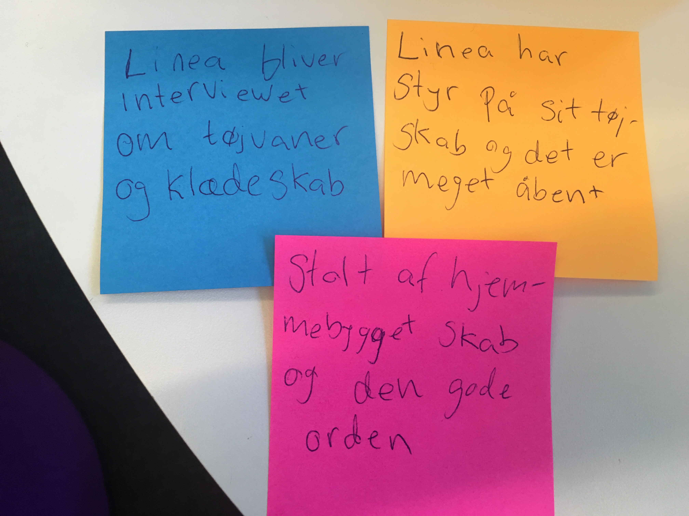

Spørgsmål til Lineas klædeskab
- Hvordan ville du beskrive dit klædeskab? (Rodet, orden, organiseret?)
- Hvor mange timer om ugen bruger du ca. På dit klædeskab?
- Vil du helst købe tøj brugt eller ikke brugt?
- Hvad gør du med tøj du ikke kan passe, bruge, lide mere?
- Hvordan er din oplevelse når du finder tøj ? Kaotisk, ordenligt osv.?
- Skifter du tøj flere gange om dagen?
- Tror du at du bruger flere penge end gennemsnittet på tøj?
- Hvordan kunne dit klædeskabet forbedres?
stort, et helt værelse, stativ og hylder. visuelt åbent, organiseret grundet åbenhed, farverigt.
Hurtigt om morgenen, 1-2 timer om ugen på orden tilfredsstillende strygning og prøvning af outfits.
50/50, finde noget anderledes ved vintage, Følelsen af af at købe i en butik er god
Sælger på loppemarkedet, - genbrug, videregivning til søskende eller kusiner.
Overskuelig, visuelt og ordentligt, få tøjskifte, planlægger så småt allerede hvad der skal bruges inden hun er gået ud af sengen
2-3 gange om dagen, hygge tøj eller finere til aftaler
Bruger mange penge på tøj, hun har en god økonomi
Alt er åbent hvilket resultere i støv med et lukket skab til bukser og trøjer ville det være i orden med lidt rod, trang til lidt rod.
insightsne efter interviewet var følgende:
